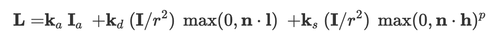
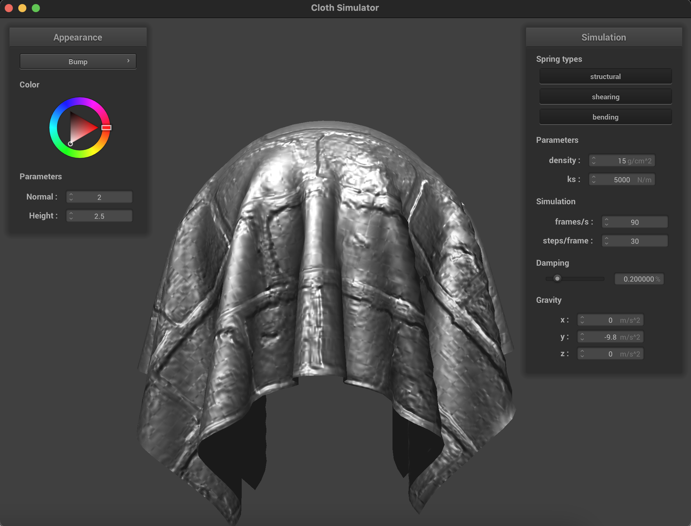
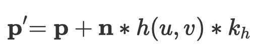

In this project, we will implement various components of a
physically-based cloth simulation. We will start with constructing the
actual cloth using a mass-and-spring system to track the positions,
movements, internal contraining forces, and geometries of the cloth over
the course of our simulation. Next, we will lay the foundation of our
simulation by constructing the framework for how each point mass responds
to external and internal forces between each time step using Verlet
integration. Then, we will implement collisions with both external objects
and the cloth itself by detecting collisions and correcting the point mass
positions in an efficient manner. Lastly, we will implement various
shaders using GLSL, allowing us to render different visual effects in
real-time by utilizing the GPU.
Part 1: Masses and springs
In preparation for our simulation, we will first create the cloth. Here,
we use a simple mass-and-spring system, where upon intialization, the
cloth is represented by
num_width_points by num_height_points point
masses spaced evenly across the planar surface. in other words, we divide
our cloth into a grid, where each vertex is responsible the behavior
(position, acting forces, etc.) of its respective region, and altogether
simulates how the entire cloth behaves. Springs, on the other hand,
connects point masses with each other and essentially describes how the
cloth is held together and contrains its motion. For each point mass at
grid position (r, c), we have three types of spring
contraints: 1. Structural, which exists between (r, c) and
[(r-1, c), (r, c-1)], describes the positional ordering of
point masses relative to their neighbors. 2. Shearing, which exists
between (r, c) and [(r-1, c-1), (r-1, c+1)],
limits how much point masses and shapes can collapse and deform. 3.
Bending, which exists between (r, c) and
[(r-2, c), (r, c-2)], characterizes how our cloth can bend
and fold.
As for the implementation, it is quite straightforward as we simply create
three for loops. The first one loops over the grid, calculates the
numerical width and height coordinates of the point mass, determines its
position based on the orientaion of the scene, and appends its to the
vector of point masses. The second loops over the pinned vector and sets
the pinned property of each pinned mass to true. Lastly, the
third loop loops over the point masses, creates all appropriate
structural, shearing, and bending springs according to the aforementioned
rules, and appends them to the vector of springs.
As shown below, we can see the mass-and-spring system in action, where the
cloth is composed of a grid of point masses connected by springs.
Furthermore, we can see that the spring constraints are applied correctly.
Since shearing is only applied to the two upper diagonal point masses, we
see that when we disable shearing, we no longer have any diagonal lines
and only have horizontal and vertical lines. Similarly, since structural
and bending are applied to the point masses directly to top and left
directions with distances 1 and 2 respectively, we expect that when we
diasble them and only allow shearing, we should only see diagonal lines.
Of course, when we enable all three constraints, our cloth has both
diagonal, horizontal, and vertical lines.
Without shearing
Only shearing
All constraints
Part 2: Simulation via numerical integration
In this part we will implement and simulate physical motion. Our basic
structure is as follows: For each simulation timestep, we calculate the
combined forces acting on each point mass, apply various constraints, and
derive its new position. When we repeat this process across all timesteps,
we will be able to simulate how the cloth's geometry changes and develops.
There are two categories of forces acting on our point masses - external
forces, which accounts for gravity and collisions, as well as spring
correction forces, which accounts for the internal bounding force that
holds the cloth together in one piece. Therefore, to calculate the total
force for each point mass, we simply sum up all external and spring
correction force vectors, which are derived using Newton's second law of
motion and Hook's law respectively.
Next, to estimate how the position of point masses changes after being
affected by the combined force in each time step, we will use Verlet
integration. We first start with kinematics motion, where given an objects
current position, velocity, and acceleration, we can determine its final
position over some time step dt using
, which can be modified to
after approximating the displacement due to velocity with the total
displacemnet of the previous time step scaled by a factor d,
which accounts for damping due to friction and other energy losses. Using
this equation, as well as the point mass data structure that supplies its
various required variables (where the acceleration can be derived from
pm.forces / mass), we can now estimate the new position of
each point mass.
Finally, we apply one last constraint in our motion simulation, the
deformation constraint, which limits our springs to a maximum length of
1.1 times the resting length. In other words, by ensuring that springs
will never be stretched beyond a certain extent, we prevent our point
masses from ever displacing too much away from each other and consequently
our cloth from losing its shape. This is relatively simple to implement,
for each spring, if the distance between its two point masses exceeds 1.1
times its resting length, we calculate the correction vector using the
length to be deducted multiplied by the direction from one point mass to
the other. We then simply apply the correction vector evenly among the two
point masses (and account for the reverse direction appropriately), unless
one of the two is pinned, in which case we apply the entire correction to
the unpinned one.
As shown below in the demonstation, we see that we can now succesfully and
accurately simulate the fall of a cloth that has two of its corners pinned
in the air (scene/pinned2.json)
We can also compare how different parameters affect the simulation. For
example, since the spring constant ks is positively related
to the spring correction force, when we have a high ks, we
expect more of a contracting effect on the cloth. In other words, the
cloth should look tighter and would be as if it was made out of some sort
of tight, stretchy polyester. On the other hand, when we have a low
ks, our point masses would have less force bounding them
together, which would result in a looser, silky cloth with more drape.
Below is the result of comparing ks's of 1000, 5000
(default), and 10000 N/m.
We can see very clearly in this frame how a lower ks (left)
results in a looser, droopier cloth whereas a higher constant (right)
results in one that is tighter and firmer.
We can also compare the effects of changing the density of the cloth.
Since the mass of each point mass is derived from the density parameter,
at a higher density, the same force would correspond to less acceleration,
which over the Verlet integration, leads to less displacement. We see this
effect in the final swinging stages of the falling cloth where after the
initial fall, upon close inspection we can see that the denser cloth takes
fewer swings of smaller magnitudes to settle and reach the resting
position. Below is the result of comparing densities of 1, 15 (default),
and 50 g/cm^2.
Although the swing effect is easier to see from the video, we can also see
that at rest, the denser cloth (right) also droops more and have greater
folds due to having the heavier unpinned center region hanging while the
cloth with a lower density (left) appears lighter and have a less
noticeable center "U-shape".
Lastly, we can compare the results of changing the damping parameter,
which essentially measures how quickly velocity terminates due to friction
and other energy loss such as air resistance. In other words, since
damping is inversely proportional to the displacement due to velocity as
per the Verlet integration, it is expected that a lower damping will
result in higher velocity, less energy loss, and consequently more
back-and-forth rapid motions before reaching the terminal state, as shown
in the more intense swinging and wobbling motion of the cloth. In
contrast, a higher damping will "damp" more motion, resulting in less
momentum (p = mv) as well as a slower, less intense path and
fewer swings to rest. Below is the comparison between damping paramters of
0.07, 0.2 (default), and 0.4 percent.
We can see very clearly in this frame that at the same time step, the
lowest damping cloth (left) has already completed the initial swing and is
on its way to the second, "reverse" swing while the highest damping
(right) is barely halfway through its first and only swing. We can also
see the difference in velocity and momentum in the flat and foldless
surface of the latter compared to the erratic and irregular surface of
former.
Finally, we can also see what setting various parameters to extreme
values, such as zero, would do. When the spring constant is zero, it
essentially means that there will be no force due to spring contraction,
and our cloth would be very loose as shown below. For density at zero, the
cloth simply would not render as there is no mass. Lastly, when damping
equals zero, there is very little resistance and the pendulum motion goes
on for very long without losing much energy during each swing.
Next, we will implement collisions, which essentially boils down to
detecting when a point mass intersects with another object and correcting
its position to prevent the point mass from phasing through the object. We
will be implementing collisions for both the sphere and plane classes.
Despite their different geometries, the collision logic is more or less
the same involving 3 main steps: 1. Checking if a collision occurred 2. If
so, find the tangent point on the object's surface at which the point mass
should've intersected with and put to a stop 3. Apply the correction
vector, scaled by some friction constant f, to the point
mass's last position to bring its new position to the tangent point. Since
only steps 1 and 2 differ for each class, I will only explain them in
detail below.
For the sphere class, we will detect collisions by checking if the
distance between the point mass and sphere origin is less than or equal to
its radius. If so, we have a collision and will then calculate the tangent
point by extending a distance equal to the radius from the origin towards
the point mass position, thereby ensuring that the tangent point will
always be on the surface of the sphere.
For the plane class, we will detect collisions by checking if the point
mass's position and last position are on opposite sides of the plane or if
one of them lies perfectly on the plane. Both scenarios intuitively imply
an intersection between the point mass's path and the plane. We can
determine which side a point is relative to the plane by using the formula
d = N.x * (p.x - p'.x) + N.y * (p.y - p'.y) + N.z * (p.z - p'.z), where N represents the surface normal of the plane,
p' a point that lies on the plane, and p the
point to test. d is then the distance from the point to the
plane, and its sign tells us which side it is relative to the surface
normal vector, where a positive d implies that the point is
on the side that N points to, and vice versa. Lastly, to
calculate the tangent point, we add -(d * N) to the position
of the point mass and add a small surface offset to ensure that the
tangent point is not inside the plane and is ron the same side as the last
position.
We can now simulate how the cloth falls onto and interacts with a sphere.
Here is the comparison between ks=500,
ks=5000 (default), and ks=50000.
We can see the effect of different spring constants at each resting state.
Since ks is directly related to the magnitude of the spring
correction force, a lower ks (leftmost image) would result in
a weaker internal force that holds and fixes the cloth in place, which
allows the to stretch, droop, and deform more. On the other hand, a higher
ks (rightmost image) would result in a strong spring
correction force, which results in a stiffer, harder, and more rigid
cloth.
Moreover, we can also see how the cloth interacts and falls flat onto a
plane.
We will now implement self-collisions, which in essence, prevents our
cloth from collapsing and phasing through itself. The idea is quite
straightforward, at each simulation time step, we want to ensure that no
two point masses are too close to each other. A simple solution would be
to check every point mass against every other one, and if the pair are to
close, adjust their positions and move them apart. However, this would
result in a O(n^2) algorithm, which is too slow given the target frame
rate. We will instead implement an ideally amortized linear algorithm,
where we use a hashmap to store point masses in the same general
space/area indexed by the hash of their box volume. This way, we can check
for collisions quickly by minimizing the scope of our search to just the
point masses near our target.
First, we need to be able to derive the box volume hash given a point
mass. To do this, we essentially divide our space into a 3D grid,
determine which grid box the point is in, and create a more or less unique
number based on the ordering of the grid box. Since each grid box has the
dimentions (w, h, t), where
w = 3 * width / num_width_points,
h = 3 * height / num_height_points, and
t = max(w, h), we can find the point mass's box index along
each dimension (i.e. the "left" grid line or floor value of the box) via
[w, h, t]_index = [x, y, z] - fmod([x, y, z], [w, h, t]).
Lastly, we compute the hash by multiplying each index by a different large
prime and sum the results up to minimize hash collisions between different
boxes.
Now that we can hash a point mass position, we simply go through the list
of point masses and place them in the correct bin during each simulation
step to set up our spatial map. Next, we look for collisions by checking
if each point mass has any same-box neighbors that are too close. If so,
like what we have done in the previous parts, we calculate the correction
vector needed to move the point mass far away enough from its neighbor and
update its position accrodingly. If there are multiple neighbors that are
too close, we apply the average correction.
As shown below, our cloth can now fold, twist, and bend in a realistic
manner without ever phasing through or clipping itself.
Furthermore, we can also compare how varying the spring constant
ks affects the simulation. Here is the result of setting
ks to 500, 5000 (default), and 50000 N/m.
Like we have explained many times in the previous sections, when the
spring constant is lowered, the cloth becomes less constrained and rigid,
which consequently gives it a floppy feel. As we can see from the left
image, when the cloth is dropped, it crumbles into itself, folds and
twists in an unpredictable manner, and produces many unstructured
protrusions. In constrast, a high ks results in a harder,
less flexible cloth as the internal straining forces become stronger. As
we can see in the right image, the cloth keeps its shape more and is much
less bendable, as indicated by the lack of folds in the z direction,
folding firmly instead of crumbling loosely.
Similarly, we can compare the effects of changing the density as well.
Here is the result of setting density to 1, 15 (default), and 50 g/cm^2.
We can see from the comparison in this frame that increasing the density
almost has an inverse effect to the simulation compared to increasing the
spring constant. We see in the high density cloth (right) that the
movement of each point mass is less affected by the spring correction
forces, which results in the cloth deforming and collapsing into a very
concentrated, central area of folds and remains entangled for a long time.
On the other hand, due to the relatively-stronger influence of spring
cosntraints, the lower density cloth (left) keeps its shape, unfolds
itself much more linearly, and spreads and flattens its folds more
efficiently and quickly.
Part 5: Cloth Sim
In this section, we will be implementing shaders using GLSL, which allows
high-speed, real-time rendering of our simulation by utilizing the GPU.
There are two main components in a shading pipeline, a vertex shader
followed by a fragment shader. The former is responsible for deriving
various values for each vertex, such as its position and surface normal in
world space as well as its render position in image space. These data are
then piped into the fragment shader, which then calculates the final
output color to be rendered on screen.
The first shader we will implement is the diffuse shader, and since it
simply diffuses the light on our vertices and does not change their
positions, we only need to modify the fragment shader. Given the position
and intensity of the point light in the scene, as well as the data from
the default vertex shader, we can use this equation to derive its color.
And end up with a render like this:
Next, we will implement the Blinn-Phong shader, which, similar to the
diffuse shader, will also only require modifying the fragment shader. The
improved realism is due to a more complex output color composed of three
terms: the ambient, diffuse, and specular components. The ambient light
simulates how light bounces and scatters around the environment and
provides the base color layer for each object. The diffuse light is
essentially just the diffuse shader from the previous part, scattering
incoming light evenly in all directions and giving a matte finish to the
surfaces. Lastly, the specular light captures the shiny reflections
concentrated towards the camera, resembling the light reflecting off
metallic and mirror surfaces. The three terms are described mathematically
with the equation below, respectively.

In my implementation, I set ka=0.1, kd=0.6,
ks=1, Ia=(1, 1, 1), and p=10,
resulting in a render like this:
ambient light only
diffused light only
specular light only
all lights (Blinn-Phong)
Since the vertex shader also provides us with the uv-coordinate of each
vertex in texture space, we can also easily map any texture onto our cloth
by setting the output color of the fragment shader to the sampling result
of any given texture at (u, v).
Next, we will implement bump mapping, which is a process that allows for
complex surface height variations without increasing the complexity of the
mesh. In essence, suppose we want to give the cloth a sand-paper-like
surface with many little particles and bumps. In order to create this
material, we must then increase the number of vertices to create each peak
and trough, which is obviously very inefficient since the general shape
and behavior of the cloth has not changed. Therefore, we can use bump
mapping to create an illusion of such bumpy materials in the shading part
of the rendering pipeline instead of the simulation part and use the same
underlying perfectly-smooth mesh. Given a height map, as well as the
function
h(u, v) that essentially returns the desired height of the
object's surface at (u, v) on the height map, we can caculate
dU and dV using the formula
Allowing us to derive the local-space "bumped" surface normal
no as (-dU, -dV, 1). Using the
tangent-bitangent-normal (TBN) matrix, we can then transform
no to nd, giving us the "bumped" surface normal
in model space. We then input the modified surface normal back to the
Blinn-Phong shader to achieve a realistic and efficient bump texture
mapping as shown below.
128x128 coarseness

16x16 coarseness
Of course, we can see that although bump mapping does give us the illusion
of these height varying textures, when we view the cloth from the side, we
still don't see any actual physical bumps. Therefore, we will now move to
displacement mapping, which builds on top of the fragment shader of bump
mapping and additionally displaces the vertex positions in the vertex
shader using

To create real, physical bumps as shown below in the caved-in mortar
layers between the bricks on the surfaces of the sphere and cloth.
128x128 coarseness
16x16 coarseness
We can also see how coarseness of the sphere mesh affects the
effectiveness of displacement mapping. For example, we can see that the
16x16 sphere has more of a polygon look and is missing the caved-in
structures of the mortar layers between the bricks compared to the 128x128
sphere. This is most likely due to the fact that since displacement occurs
at each vertex, more coarse and consequently fewer vertices leads to a
lower probability of the vertex being at the position of a bump. In other
words, since there are only 16 vertices around the circumference, there is
a good chance that none of them accounted for the mortar displacements.
Similarly, for the bump mapping, we see that the 16x16 sphere is also more
polygonic then the 128x128 one with visible sharper corners. Obviously
since bump mapping does not modify vertex positions, we do not see any
differences in the displacement of the geometry of the spheres.
Finally, we implement environment-mapped reflections, where we simply
treat the surface of our objects as mirrors. The idea is simple, since
everything we "see" must have bounced off an object and went into the
camera, we can simply reverse this to trace and derive the "source light".
In practice, given the ray vector wo from the camera to a
vertex, we use the surface normal of said vertex to reflect and determine
the source ray wi. We can then use wi to sample
the cubemap texture, allowing us to see the reflections of our surrounding
environment like a mirror.